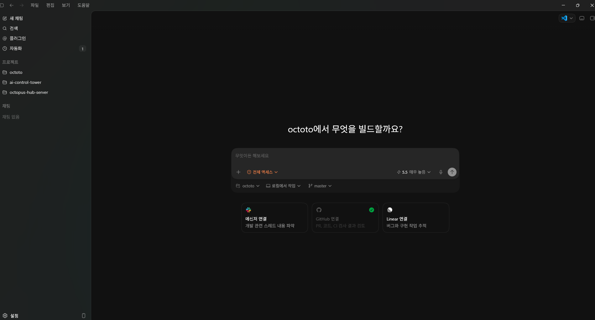
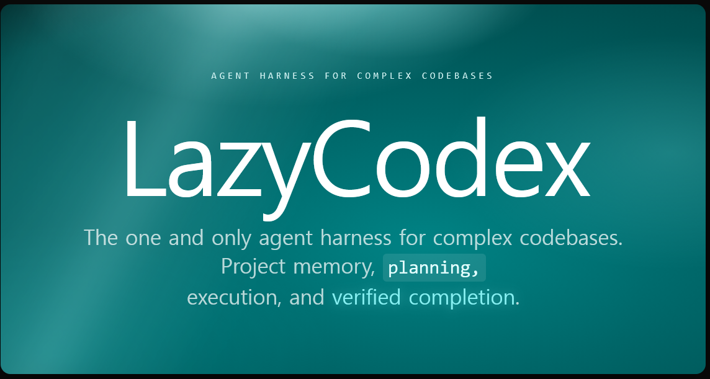
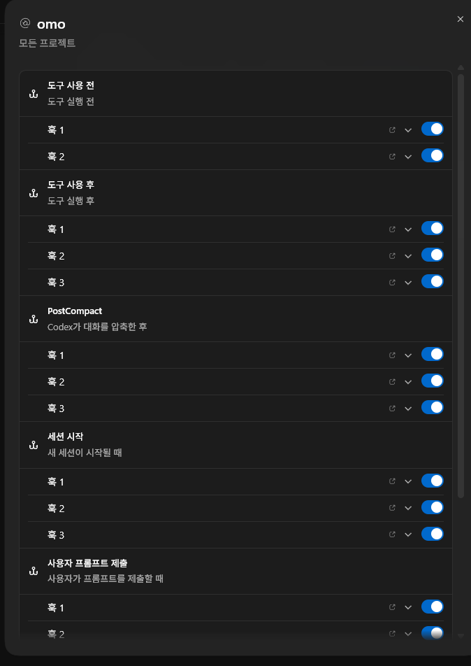
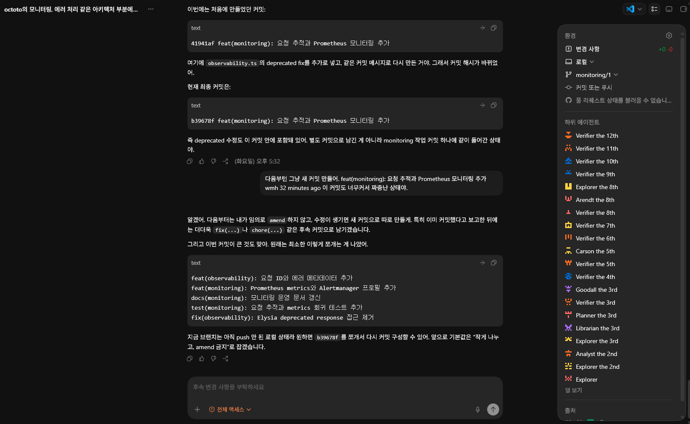

주의
작은 일은 작게.
큰 작업은 루프로 다룬다.


끝났다고 말하기 전에 다시 돈다.

스킬이 켜지면 기다림이 더 크게 느껴질 수 있음
계획, 피드백, 검증이 붙으면서 든든함으로 전환
순정 Codex를 명확히 지시하는 편이 빠를 수 있음
여러 관점을 분리하고 빠뜨린 경로를 다시 묻게 하는 힘

작은 일은 작게.
01작은 일은 작게
02큰 일은 루프로
03검증 전엔 끝이 아님
01YouTube
0203Threads
다른 사람들이 어떻게 쓰는지 본다.